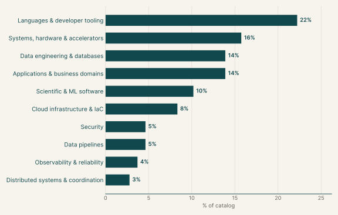
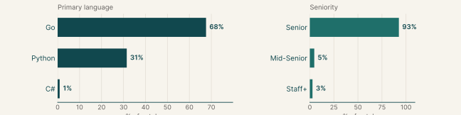
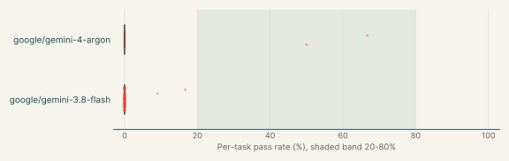
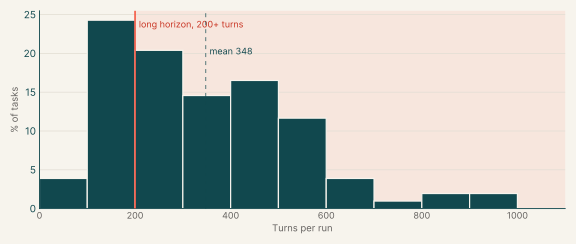
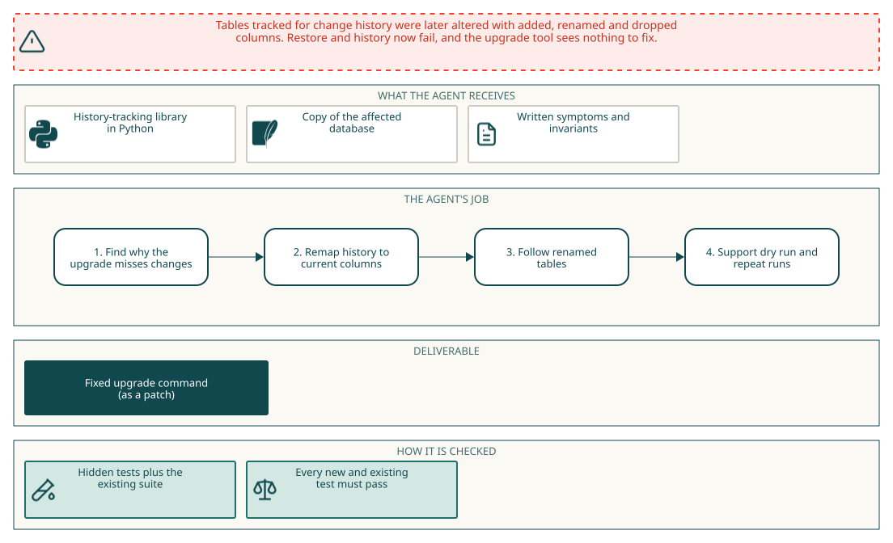
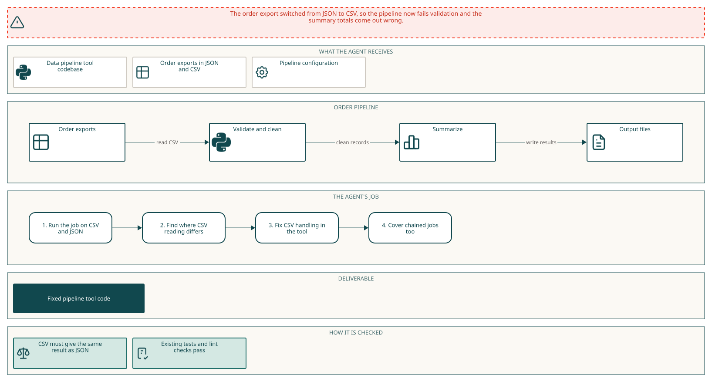

Feature implementation
Executive summary
Each task asks the agent to add a capability to an existing open-source library or service, specified the way a series of pull requests would be, while every existing behaviour keeps working. The data pipeline tasks extend data libraries so pipelines keep producing correct results after an upstream format or schema change. Hidden tests check the new behaviour and the old behaviour together.
Gemini 4 Argon passes 11% of its runs on these tasks, and it fails every run on 85% of the tasks. Gemini 3.8 Flash passes 0%, and it fails every run on 98% of the tasks. The main languages are Go (68%), Python (32%) and C# (1%).
| Languages & developer tooling | Add features to command-line tools, compilers and API tooling. | 22% |
| Systems, hardware & accelerators | Add features to networking and HTTP libraries and to smart-home device integrations. | 16% |
| Data engineering & databases | Add features to serialization formats and storage engines. | 14% |
| Applications & business domains | Add features to web applications and media processing libraries. | 14% |
| Scientific & ML software | Add features to ML, agent and geospatial libraries. | 10% |
| Cloud infrastructure & IaC | Add features to container platforms and configuration-management tools. | 8% |
| Security | Add features to cryptography and secrets libraries. | 5% |
| Data pipelines | Extend data libraries so pipelines keep correct results when upstream data changes. | 5% |
| Observability & reliability | Add features to monitoring and observability tooling. | 4% |
| Distributed systems & coordination | Add features to messaging and calendaring libraries. | 3% |
Why this catalog
Problems engineers face
Maintainers add a capability that runs through many code paths of an unfamiliar library or service, while existing callers must see no change. Typical requests add an opt-in mode or policy, keep information the library currently drops, or make a subsystem safe under concurrency and failure. Data engineers face a related problem: after an upstream format or schema change, a pipeline keeps running but produces wrong results, and the library has to handle the new data while old inputs still work.
How the tasks reproduce them
Each task pins an open-source repository, mostly Go or Python, in an offline container and gives a written specification of the new behaviour, with the public types and functions to deliver. The agent's edits are collected as a diff against the base commit. After the session, hidden acceptance tests check the new behaviour and the project's existing tests check that nothing else changed. The data pipeline tasks also provide sample inputs in /data.
Typical prompts
- A capability gap stated as "X cannot Y", then dense paragraphs on the behaviour to add and the behaviour to preserve.
- A bullet list of required exported names, constants and signatures, with a research and plan file due before any code change.
- A first-person data problem after an upstream change, with sample files in
/dataand a request to keep existing results unchanged.
Domain breakdown
Share of tasks by domain

Language and seniority
Primary language and seniority

Primary language
| Go | 67.6% |
| Python | 31.5% |
| C# | 0.9% |
Seniority
| Senior | 92.6% |
| Mid-Senior | 4.6% |
| Staff+ | 2.8% |
Gemini pass rates across the catalog
| google/gemini-4-argon | 11% | 85% | 15% | 0% |
| google/gemini-3.8-flash | 0% | 98% | 0% | 0% |
Per-task pass rate by Gemini model

Turn counts and long-horizon tasks
A task's turn count is the average over its Gemini runs. A task is long horizon when that average is 200 or more turns.
| Average turn count | 347.9 |
| Median turn count | 321.7 |
| Range | 79 to 956 |
| Long-horizon tasks (200+ turns) | 72% of tasks |
Turns per task

| google/gemini-3.8-flash | 94% | 345.5 | 69% |
| google/gemini-4-argon | 13% | 229.6 | 63% |
Example tasks from the shortlist
These examples are attached samples. All of them come from the shortlist and have Gemini runs that pass at most half the time.
Example 1: Data formats & serialization (Python)
| Sample | Attached sample |
| Final category | Data engineering |
| Domain | Data pipelines |
| Sub-domain | Data formats & serialization |
| Language | Python |
| Seniority | Mid-Senior |
| Turn count | 84 (google/gemini-4-argon) |
| Long horizon | no |
Prompt shape: A feature request for a widely used library, written as a list of behaviors per option with compatibility constraints for existing behavior.
Prompt
Full instruction given to the agent (instruction.md)
Our partner's XML feed now carries explicit nulls and text where padding matters. A sample is in /data/partner-feed.xml. Extend the existing xmltodict.parse and xmltodict.unparse APIs in /app so callers can opt into the new feed without changing the defaults.
With parse(..., xsi_nil=True), an element whose XML Schema instance nil attribute is true or 1 becomes None, regardless of its prefix, other attributes or text. Other values of nil and ordinary empty elements keep their existing behavior. This works with namespace processing on or off, and with streaming callbacks. With parse(..., xml_space=True), xml:space="preserve" retains text and comment whitespace exactly, including whitespace only text; descendants inherit this policy until xml:space="default" restores the normal stripping rule. This also applies to streamed entries, even when the input arrives in byte chunks. The two options can be used together.
With unparse(..., xsi_nil=True), every None element, including nested elements and list entries, emits an explicit schema instance nil attribute with a valid namespace binding. Empty strings remain ordinary empty elements. A nullable document can be parsed, written and parsed again without losing its null locations. Without the new options, existing parsing and writing behavior must stay the same. Malformed XML and invalid UTF-8 still raise Expat errors, and entity declarations remain disabled by default with ValueError.
The environment has Python 3.12, installed project dependencies and no network. The existing repository checks should still pass.
Pass rates
| google/gemini-4-argon | 50% | 0.50 |
Environment
How the task works

How it maps to the work
A data engineer ingests partner XML that now carries explicit nulls and whitespace that matters. They extend a parser and writer with opt-in options, keep defaults unchanged and make a document round trip without losing null positions.
Example 2: Databases & storage engines (Python)
| Sample | Attached sample |
| Final category | Data engineering |
| Domain | Data pipelines |
| Sub-domain | Databases & storage engines |
| Language | Python |
| Seniority | Mid-Senior |
| Turn count | 236 (google/gemini-4-argon) |
| Long horizon | yes |
Prompt shape: A production symptom with several schema change causes, then a list of invariants the migration must satisfy including idempotence and error cases.
Prompt
Full instruction given to the agent (instruction.md)
We track SQLite tables with sqlite-history-json (/app) and have since changed some: columns added with ALTER TABLE ADD COLUMN, columns and tables renamed with ALTER TABLE RENAME while tracking was on, and columns dropped by disabling tracking, dropping and enabling again. Now restore returns NULLs or fails with "no such column" and history on a renamed table fails, but python -m sqlite_history_json.upgrade says there's nothing to upgrade. A copy of the database is at /data/shop.db.
After the upgrade, restoring a table that has tracking on to its latest entry should give exactly its current rows, and later changes should be recorded as on a table tracked from scratch. Existing entries keep their id, timestamp, operation, primary key and group, with each value under the current name of the column it was recorded from, in history, row-history, restore and row-state-sql. Values for dropped columns stay in the history and restore ignores them. A renamed table's history follows it, so everything works under the new name, enable and disable included.
Tables with tracking off and history of dropped tables stay as they are. A second run changes nothing. With --dry-run it lists only the tables it would change and changes nothing. If a renamed table's new name already has its own history, the upgrade exits with an error naming the table and changes nothing. Databases from 0.3 and earlier must still upgrade, and the tests in /app/tests must keep passing.
Could you find what's wrong and fix it? There's no network here.
Pass rates
| google/gemini-4-argon | 0% | 0.00 |
Environment
How the task works

How it maps to the work
A data engineer owns audit history for SQLite tables whose schema later changed through ALTER TABLE. They must repair the stored history in an upgrade path so restore and history queries work again, with a safe dry run and no change on a second run.
Example 3: Data pipelines & ETL (Python)
| Sample | Attached sample |
| Final category | Data engineering |
| Domain | Data pipelines |
| Sub-domain | Data pipelines & ETL |
| Language | Python |
| Seniority | Mid-Senior |
| Turn count | 248 (google/gemini-4-argon) |
| Long horizon | yes |
Prompt shape: An export format switch with a failing command given verbatim and an equivalence requirement between two input formats.
Prompt
Full instruction given to the agent (instruction.md)
Since the night of 2026-10-04 the order platform writes its nightly export as CSV instead of JSON. That first night it wrote both, so /data/orders has orders-2026-10-04.json and orders-2026-10-04.csv with the same orders, the CSV from the next night, and our pipeline config, /data/orders/pipeline.yml. The pipeline validates and cleans the export, then summarizes the cleaned CSV. On the CSV export, etlplus run --config /data/orders/pipeline.yml --job order_summary fails validation, and with validation turned off the summary totals are wrong.
Any etlplus job that reads a CSV file should give the result it gives on the same records as JSON: every record exactly once with the same fields, and the same validation outcome, filter result, sort order and aggregate values. An empty cell is a missing value. This also holds for a job reading a CSV file that an earlier job in the run wrote. Values in the output files may stay text.
Please fix etlplus in /app. The existing tests in /app/tests and the ruff, pydocstyle, pydoclint and mypy checks the project runs in CI have to keep passing. There's no network; the project's environment is installed in /opt/venv.
Pass rates
| google/gemini-4-argon | 0% | 0.00 |
Environment
How the task works

How it maps to the work
A data engineer's nightly pipeline switched its export from JSON to CSV, so validation fails and totals are wrong. They fix the library so a CSV source gives the same records and results as JSON, including CSV written by an earlier job.